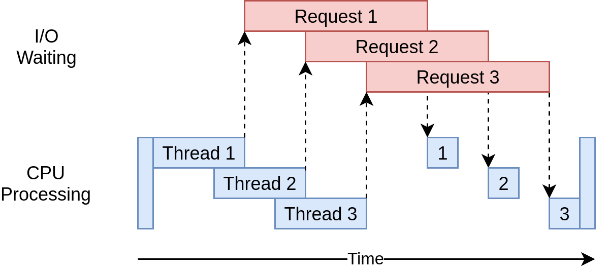

Parallel Computing
Questions
What is the Global Interpreter Lock in Python?
How can Python code be parallelised?
Objectives
Become familiar with different types of parallelism
Learn the basics of parallel workflows, multiprocessing and distributed memory parallelism
Instructor note
40 min teaching/type-along
40 min exercises
Modes of parallelism
The performance of a single CPU core has stagnated over the last ten years and most of the speed-up in scientific computing is coming from using multiple CPU cores, i.e. parallel processing. Parallel processing can be roughly catergorized into the following modes:
Shared memory parallelism (multithreading):
Parallel threads do separate work
Different threads communicate via the same memory and write to shared variables
Distributed memory parallelism (multiprocessing):
Different processes manage their own memory segments and python interpreter
Different processes share data by communicating e.g. using Message Passing Interface when needed
Note
“Embarrassingly” parallel: If you can run multiple instances of a program and do not need to synchronize/communicate with other instances, i.e. the problem at hand can be easily decomposed into independent tasks or datasets and there is no need to control access to shared resources, it is known as an embarrassingly parallel program. A few examples are listed here:
Monte Carlo analysis
Ensemble calculations of numerical weather prediction
Discrete Fourier transform
Convolutional neural networks
Applying same model on multiple datasets
In the Python world, it is common to see the word concurrency denoting any type of simultaneous processing, including threads, tasks and processes.
Concurrent tasks can be executed in any order but with the same final results
Concurrent tasks can be but need not to be executed in parallel
concurrent.futuresmodule provides implementation of thread and process-based executors for managing resources pools for running concurrent tasksConcurrency is difficult: Race condition and Deadlock may arise in concurrent programs
Warning
Parallel programming requires that we adopt a different mental model compared to serial programming. Many things can go wrong and one can get unexpected results or difficult-to-debug problems. It is important to understand the possible pitfalls before embarking on code parallelisation. For an entertaining take on this, see Raymond Hettinger’s PyCon2016 presentation.
The Global Interpreter Lock (GIL)
The designers of the Python language made the choice that only one thread in a process can run actual Python code by using the so-called global interpreter lock (GIL). This means that multiple threads executing Python code at the same time is prevented, and therefore it is bad for parallelism. The main reason is that part of the Python implementation related to the memory management is not thread-safe. Moreover, library developers often care a lot about performance and will design APIs that support working around the GIL. These workaround frequently lead to APIs that are more difficult to use. Consequently, users of these APIs may experience the GIL as a usability issue and not just a performance issue.
Starting with the 3.13 release, CPython has support for a build of Python called free threading where the global interpreter lock (GIL) is disabled. Free-threaded execution allows for full utilization of the available processing power by running threads in parallel on available CPU cores. While not all software will benefit from this automatically, programs designed with threading in mind will run faster on multi-core hardware.
Note
Work is underway across the ecosystem to update packages to support free-threaded Python alongside improvements to thread safety guarantees, testing, and documentation.
Most pure Python code that is already thread-safe should work without modification. However, some third-party packages, in particular those extension modules using Python’s C API may not be ready for use in a free-threaded build, and will re-enable the GIL. Running these in a free-threaded environment can lead to crashes and data corruption.
The free-threaded build of CPython aims to provide similar thread-safety behavior to the default GIL-enabled build. Built-in types like dict, list, and set use internal locks to protect against concurrent modifications in ways that behave similarly to the GIL. However, there is no guarantee of consistent current or future behavior of buit-in types. It’s recommended to explicitly use the locking mechanisms (e.g. threading.Lock or other synchronization primitives) instead of relying on the internal locks of built-in types, whenever possible to protect shared, mutable state in the code to ensure logical correctness. Race conditions that once were theoretical may happen now.
Multithreading
The threading library
provides an API for creating and working with threads. The simplest approach to
create and manage threads is to use the ThreadPoolExecutor class from concurrent.futures module.
An example use case could be to download data from multiple websites using
multiple threads:
import concurrent.futures
def download_all_sites(sites):
with concurrent.futures.ThreadPoolExecutor(max_workers=4) as executor:
executor.map(my_download_function, sites)
The speedup gained from multithreading I/O bound problems can be understood from the following image.
{kind=link}

From https://realpython.com/, distributed via a Creative Commons Attribution-NonCommercial-ShareAlike 3.0 Unported licence
Further details on threading in Python can be found in the See also section below.
Multiprocessing
The multiprocessing module in Python supports spawning processes using an API
similar to the threading module. It effectively side-steps the GIL by using
subprocesses instead of threads, where each subprocess is an independent Python
process. One of the simplest ways to use multiprocessing is via Pool objects and
the parallel Pool.map() function, similarly to what we saw for multithreading above.
Note
concurrent.futures.ProcessPoolExecutor is actually a wrapper for
multiprocessing.Pool to unify the threading and process interfaces.
Multiple arguments
For functions that take multiple arguments one can instead use the Pool.starmap()
function, and there are other options as well, see below:
import multiprocessing as mp
def power_n(x, n):
return x ** n
if __name__ == '__main__':
with mp.Pool(processes=4) as pool:
res = pool.starmap(power_n, [(x, 2) for x in range(20)])
print(res)
from concurrent.futures import ProcessPoolExecutor
def power_n(x, n):
return x ** n
def f_(args):
return power_n(*args)
xs = np.arange(10)
chunks = np.array_split(xs, xs.shape[0]//2)
with ProcessPoolExecutor(max_workers=4) as pool:
res = pool.map(f_, chunks)
print(list(res))
from concurrent.futures import ProcessPoolExecutor
def power_n(x, n):
return x ** n
with ProcessPoolExecutor(max_workers=4) as pool:
res = pool.map(power_n, range(0,10,2), range(1,11,2))
print(list(res))
Interactive environments
Functionality within multiprocessing requires that the __main__ module be
importable by children processes. This means that some functions may not work
in the interactive interpreter like Jupyter-notebook.
multiprocessing has a number of other methods which can be useful for certain
use cases, including Process and Queue which make it possible to have direct
control over individual processes. Refer to the See also section below for a list
of external resources that cover these methods.
multithreading vs multiprocessing
Both libraries allow Python program to achieve parallelism, multiprocessing has a few substantial limitations: - overhead due to objects serialization during communication between processes - overhead due to spawning a subprocess: ~50 ms while a thread takes ~100 µs - some C/C++ libraries only support access from multiple threads
Exercises
I/O-bounded process
In this exercise, we will download Global Forecast System (GFS) weather model data directly through NOAA’s real-time NOMADS server.
import os
from concurrent.futures import ThreadPoolExecutor, as_completed
import requests
# Configuration
MAX_THREADS = 3 # Adjust based on your connection speed and server limits
DOWNLOAD_DIR = "./downloads" # Directory where to put the files
# Sample files to download
FILES_TO_DOWNLOAD = [
{
"url": "https://nomads.ncep.noaa.gov/pub/data/nccf/com/gfs/prod/gfs.20260817/00/atmos",
"filename": "gfs.t00z.pgrb2.0p25.f000",
},
{
"url": "https://nomads.ncep.noaa.gov/pub/data/nccf/com/gfs/prod/gfs.20260817/00/atmos",
"filename": "gfs.t00z.pgrb2.0p25.f003",
},
{
"url": "https://nomads.ncep.noaa.gov/pub/data/nccf/com/gfs/prod/gfs.20260817/00/atmos",
"filename": "gfs.t00z.pgrb2.0p25.f006",
},
{
"url": "https://nomads.ncep.noaa.gov/pub/data/nccf/com/gfs/prod/gfs.20260817/00/atmos",
"filename": "gfs.t00z.pgrb2.0p25.f009",
},
{
"url": "https://nomads.ncep.noaa.gov/pub/data/nccf/com/gfs/prod/gfs.20260817/00/atmos",
"filename": "gfs.t00z.pgrb2.0p25.f012",
},
{
"url": "https://nomads.ncep.noaa.gov/pub/data/nccf/com/gfs/prod/gfs.20260817/00/atmos",
"filename": "gfs.t00z.pgrb2.0p25.f015",
},
]
def download_file(file_info):
"""Downloads a single file streaming it in chunks to optimize memory."""
url = file_info["url"]
filename = file_info["filename"]
save_path = os.path.join(DOWNLOAD_DIR, filename)
try:
# Stream the download to avoid loading huge files into memory all at once
with requests.get(os.path.join(url,filename), stream=True, timeout=15) as response:
response.raise_for_status() # Check for HTTP errors (404, 500, etc.)
with open(save_path, "wb") as file:
for chunk in response.iter_content(
chunk_size=8192
): # 8KB chunks
if chunk:
file.write(chunk)
return f"Successfully downloaded: {filename}"
except requests.exceptions.RequestException as e:
return f"Failed to download {filename}. Error: {e}"
except Exception as e:
return f"An unexpected error occurred for {filename}: {e}"
def main():
# Ensure destination directory exists
os.makedirs(DOWNLOAD_DIR, exist_ok=True)
print(
f"Starting download of {len(FILES_TO_DOWNLOAD)} files using {MAX_THREADS} threads...\n"
)
# Use ThreadPoolExecutor to handle concurrent downloads
with ThreadPoolExecutor(max_workers=MAX_THREADS) as executor:
# Submit all tasks to the executor
future_to_url = {
executor.submit(download_file, file): file
for file in FILES_TO_DOWNLOAD
}
# Process results as they finish
for future in as_completed(future_to_url):
result_message = future.result()
print(result_message)
print("\nAll download processes completed.")
if __name__ == "__main__":
main()
import os
from concurrent.futures import ThreadPoolExecutor, as_completed
import requests
# Configuration
MAX_THREADS = 3 # Adjust based on your connection speed and server limits
DOWNLOAD_DIR = "./downloads"
# Sample files to download (Replace these URLs with your actual file targets)
FILES_TO_DOWNLOAD = [
{
"url": "https://nomads.ncep.noaa.gov/pub/data/nccf/com/gfs/prod/gfs.20260817/00/atmos",
"filename": "gfs.t00z.pgrb2.0p25.f000",
},
{
"url": "https://nomads.ncep.noaa.gov/pub/data/nccf/com/gfs/prod/gfs.20260817/00/atmos",
"filename": "gfs.t00z.pgrb2.0p25.f003",
},
{
"url": "https://nomads.ncep.noaa.gov/pub/data/nccf/com/gfs/prod/gfs.20260817/00/atmos",
"filename": "gfs.t00z.pgrb2.0p25.f006",
},
{
"url": "https://nomads.ncep.noaa.gov/pub/data/nccf/com/gfs/prod/gfs.20260817/00/atmos",
"filename": "gfs.t00z.pgrb2.0p25.f009",
},
{
"url": "https://nomads.ncep.noaa.gov/pub/data/nccf/com/gfs/prod/gfs.20260817/00/atmos",
"filename": "gfs.t00z.pgrb2.0p25.f012",
},
{
"url": "https://nomads.ncep.noaa.gov/pub/data/nccf/com/gfs/prod/gfs.20260817/00/atmos",
"filename": "gfs.t00z.pgrb2.0p25.f015",
},
{
"url": "https://nomads.ncep.noaa.gov/pub/data/nccf/com/gfs/prod/gfs.20260817/00/atmos",
"filename": "gfs.t00z.pgrb2.0p25.f018",
},
{
"url": "https://nomads.ncep.noaa.gov/pub/data/nccf/com/gfs/prod/gfs.20260817/00/atmos",
"filename": "gfs.t00z.pgrb2.0p25.f021",
},
{
"url": "https://nomads.ncep.noaa.gov/pub/data/nccf/com/gfs/prod/gfs.20260817/00/atmos",
"filename": "gfs.t00z.pgrb2.0p25.f024",
},
{
"url": "https://nomads.ncep.noaa.gov/pub/data/nccf/com/gfs/prod/gfs.20260817/00/atmos",
"filename": "gfs.t00z.pgrb2.0p25.f027",
},
{
"url": "https://nomads.ncep.noaa.gov/pub/data/nccf/com/gfs/prod/gfs.20260817/00/atmos",
"filename": "gfs.t00z.pgrb2.0p25.f030",
},
{
"url": "https://nomads.ncep.noaa.gov/pub/data/nccf/com/gfs/prod/gfs.20260817/00/atmos",
"filename": "gfs.t00z.pgrb2.0p25.f033",
},
]
def download_file(file_info):
"""Downloads a single file streaming it in chunks to optimize memory."""
url = file_info["url"]
filename = file_info["filename"]
save_path = os.path.join(DOWNLOAD_DIR, filename)
try:
# Stream the download to avoid loading huge files into memory all at once
with requests.get(os.path.join(url,filename), stream=True, timeout=15) as response:
response.raise_for_status() # Check for HTTP errors (404, 500, etc.)
with open(save_path, "wb") as file:
for chunk in response.iter_content(
chunk_size=8192
): # 8KB chunks
if chunk:
file.write(chunk)
return f"Successfully downloaded: {filename}"
except requests.exceptions.RequestException as e:
return f"Failed to download {filename}. Error: {e}"
except Exception as e:
return f"An unexpected error occurred for {filename}: {e}"
def main():
# Ensure destination directory exists
os.makedirs(DOWNLOAD_DIR, exist_ok=True)
print(
f"Starting download of {len(FILES_TO_DOWNLOAD)} files using {MAX_THREADS} threads...\n"
)
# Use ThreadPoolExecutor to handle concurrent downloads
with ThreadPoolExecutor(max_workers=MAX_THREADS) as executor:
# Submit all tasks to the executor
future_to_url = {
executor.submit(download_file, file): file
for file in FILES_TO_DOWNLOAD
}
# Process results as they finish
for future in as_completed(future_to_url):
result_message = future.result()
print(result_message)
print("\nAll download processes completed.")
if __name__ == "__main__":
main()
Accessing duckDB database
In this exercise, we will simultaneously insert into and read from a DuckDB database across multiple Python threads.
import duckdb
from concurrent.futures import ThreadPoolExecutor, as_completed
import threading
import random
# ==========================================
# 1. Setup Database Connection & Table
# ==========================================
duckdb_con = duckdb.connect('my_peristent_db.duckdb')
duckdb_con.execute("""
CREATE OR REPLACE TABLE my_inserts (
thread_name VARCHAR,
insert_time TIMESTAMP DEFAULT current_timestamp
)
""")
# ==========================================
# 2. Worker Tasks (Writer & Reader)
# ==========================================
def write_task(duckdb_con, task_id):
# Create a unique, thread-safe cursor from the main connection
local_con = duckdb_con.cursor()
# Track the underlying OS thread name alongside the task ID
thread_name = f"writer_task_{task_id} ({threading.current_thread().name})"
local_con.execute("""
INSERT INTO my_inserts (thread_name) VALUES (?)
""", (thread_name,))
return f"Task {task_id} successfully inserted data."
def read_task(duckdb_con, task_id):
# Create a unique, thread-safe cursor from the main connection
local_con = duckdb_con.cursor()
thread_name = f"reader_task_{task_id} ({threading.current_thread().name})"
results = local_con.execute("""
SELECT ? AS worker, count(*) AS row_counter, current_timestamp
FROM my_inserts
""", (thread_name,)).fetchall()
return results
# ==========================================
# 3. Queue Tasks and Execute with ThreadPool
# ==========================================
write_task_count = 5
read_task_count = 5
# Prepare the collection of callable functions and their arguments
tasks = []
for i in range(write_task_count):
tasks.append((write_task, (duckdb_con, i)))
for j in range(read_task_count):
tasks.append((read_task, (duckdb_con, j)))
# Shuffle tasks to mix reader and writer execution order randomly
random.seed(6)
random.shuffle(tasks)
# Execute via ThreadPoolExecutor
# max_workers can be tuned based on your machine's hardware capabilities
with ThreadPoolExecutor(max_workers=5) as executor:
# Submit all shuffled operations to the thread pool
futures = [executor.submit(func, *args) for func, args in tasks]
# Process results dynamically as they complete
for future in as_completed(futures):
try:
result = future.result()
# If it's a reader task (returns a list), print it out
if isinstance(result, list):
print(f"Reader Result: {result}")
except Exception as e:
print(f"A task generated an exception: {e}")
# ==========================================
# 4. Show Final Results
# ==========================================
print("\n--- Final Database Contents ---")
print(duckdb_con.execute("SELECT * FROM my_inserts ORDER BY insert_time").df())
Copernicus data analysis
In this exercise, we will download climate model data from Climate Data Store using their API, and further calculate XXXXXXXXXXX index based on the data.
import cdsapi
import concurrent.futures
import os
# Initialize the Climate Data Store client
c = cdsapi.Client()
def download_era5_daily_avg(year, month):
"""Worker function to download daily average 2m temperature for a specific month/year."""
# Ensure two-digit month format (e.g., '05' instead of '5')
month_str = f"{month:02d}"
output_filename = f"era5_daily_mean_t2m_{year}_{month_str}.nc"
# Skip download if the file already exists
if os.path.exists(output_filename):
print(f"File {output_filename} already exists. Skipping.")
return output_filename
print(f"Submitting request for {year}-{month_str}...")
try:
# Request configuration targeting the post-processed daily statistics dataset
c.retrieve(
'derived-era5-single-levels-daily-statistics',
{
'product_type': 'reanalysis',
'variable': '2m_temperature',
'daily_statistic': 'daily_mean', # Requests the pre-calculated daily average
'time_zone': 'utc+00:00', # Calculate average based on UTC day boundary
'frequency': '1_hour', # Use all 24 hourly steps to calculate the mean
'year': str(year),
'month': month_str,
'day': [f"{d:02d}" for d in range(1, 32)], # Includes all valid days of the month
'format': 'netcdf',
},
output_filename
)
print(f"Successfully downloaded: {output_filename}")
return output_filename
except Exception as e:
print(f"Error downloading {year}-{month_str}: {e}")
return None
def main():
# Define your temporal target scope
target_years = [2023, 2024, 2025]
months = list(range(1, 13)) # Months 1 through 12
# Create a list of task tuples: (year, month)
download_tasks = [(y, m) for y in target_years for m in months]
# Setting max_workers to 2 keeps the requests flowing perfectly into the server queue
MAX_CONCURRENT_REQUESTS = 2
print(f"Starting parallel download for {len(download_tasks)} month-long blocks...")
with concurrent.futures.ThreadPoolExecutor(max_workers=MAX_CONCURRENT_REQUESTS) as executor:
# Pass the task arguments into the parallel executor
futures = [executor.submit(download_era5_daily_avg, year, month) for year, month in download_tasks]
# Monitor threads as they wrap up
for future in concurrent.futures.as_completed(futures):
future.result()
print("All parallel daily-average downloads have finished.")
if __name__ == "__main__":
main()
Race condition
Race condition is considered a common issue for multi-threading/processing applications,
which occurs when two or more threads attempt to access the shared data and
try to modify it at the same time. Try to run the example using different number n to see the differences.
Think about how we can solve this problem.
from concurrent.futures import ThreadPoolExecutor, ProcessPoolExecutor
from multiprocessing import Value
# define a function to increment the value by 1
def inc(i):
val.value += 1
# using a large number to see the problem
n = 100000
# create a shared data and initialize it to 0
val = Value('i', 0)
with ThreadPoolExecutor(max_workers=4) as pool:
pool.map(inc, range(n))
print(val.value)
# create a shared data and initialize it to 0
val = Value('i', 0)
with ProcessPoolExecutor(max_workers=4) as pool:
pool.map(inc, range(n))
print(val.value)
Solution
locking resources: explicitly using locks
duplicating resources: making copys of data to each threads/processes so that they do not need to share
from concurrent.futures import ThreadPoolExecutor, ProcessPoolExecutor
from multiprocessing import Value, Lock
lock = Lock()
# adding lock
def inc(i):
lock.acquire()
val.value += 1
lock.release()
# define a large number
n = 100000
# create a shared data and initialize it to 0
val = Value('i', 0)
with ThreadPoolExecutor(max_workers=4) as pool:
pool.map(inc, range(n))
print(val.value)
# create a shared data and initialize it to 0
val = Value('i', 0)
with ProcessPoolExecutor(max_workers=4) as pool:
pool.map(inc, range(n))
print(val.value)
from concurrent.futures import ProcessPoolExecutor
from multiprocessing import Array
# define a function to increment the value by 1
def inc(i):
ind = mp.current_process().ident % 4
arr[ind] += 1
# define a large number
n = 100000
# create a shared data and initialize it to 0
arr = Array('i', [0]*4)
with ProcessPoolExecutor(max_workers=4) as pool:
pool.map(inc, range(n))
print(arr[:],sum(arr))
Compute numerical integrals
The primary objective of this exercise is to compute integrals \(\int_0^1 x^{3/2} \, dx\) numerically. One approach to integration is by establishing a grid along the x-axis. Specifically, the integration range is divided into ‘n’ segments or bins. Below is a basic serial code.
import math
import time
# Grid size
n = 100000000
def integration_serial(n):
h = 1.0 / float(n)
mysum = 0.0
for i in range(n):
x = h * (i + 0.5)
mysum += x ** (3/2)
return h * mysum
if __name__ == "__main__":
starttime = time.time()
integral = integration_serial(n)
endtime = time.time()
print("Integral value is %e, Error is %e" % (integral, abs(integral - 2/5))) # The correct integral value is 2/5
print("Time spent: %.2f sec" % (endtime-starttime))
# 13.63 sec
Think about how to parallelize the code using multithreading and multiprocessing.
Full source code
import math
import concurrent.futures
import time
# Grid size
n = 100000000
# Number of threads
numthreads = 4
def integration_concurrent(threadindex, n=n, numthreads=numthreads):
h = 1.0 / float(n)
mysum = 0.0
workload = n/numthreads
begin = int(workload*threadindex)
end = int(workload*(threadindex+1))
for i in range(begin, end):
x = h * (i + 0.5)
mysum += x ** (3/2)
return h * mysum
if __name__ == "__main__":
print(f"Using {numthreads} threads")
starttime = time.time()
with concurrent.futures.ThreadPoolExecutor(max_workers=numthreads) as executor:
partial_integrals = list(executor.map(integration_concurrent, range(numthreads)))
integral = sum(partial_integrals)
endtime = time.time()
print("Integral value is %e, Error is %e" % (integral, abs(integral - 2/5))) # The correct integral value is 2/5
print("Time spent: %.2f sec" % (endtime-starttime))
# 50.17 sec
import multiprocessing as mp
import math
import time
# Grid size
n = 100000000
nprocs = 4
def integration_process(pool_index, n, numprocesses):
h = 1.0 / float(n)
mysum = 0.0
workload = n / numprocesses
begin = int(workload * pool_index)
end = int(workload * (pool_index + 1))
for i in range(begin, end):
x = h * (i + 0.5)
mysum += x ** (3/2)
return h * mysum
if __name__ == '__main__':
print(f"Using {nprocs} processes")
starttime = time.time()
with mp.Pool(processes=nprocs) as pool:
partial_integrals = pool.starmap(integration_process, [(i, n, nprocs) for i in range(nprocs)])
integral = sum(partial_integrals)
endtime = time.time()
print("Integral value is %e, Error is %e" % (integral, abs(integral - 2/5))) # The correct integral value is 2/5
print("Time spent: %.2f sec" % (endtime - starttime))
# 3.53 sec
See also
Parallel programming in Python with multiprocessing, part 1 and part 2
Parallel programming in Python with mpi4py, part 1 and part 2
Keypoints
Beaware of GIL and its impact on performance
Use threads for I/O-bound tasks and multiprocessing for compute-bound tasks
Make it right before trying to make it fast